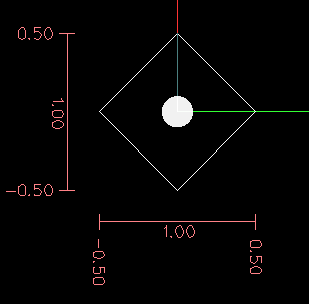

G Code Overview
Overview
The LinuxCNC G Code language is based on the RS274/NGC language. The G Code language is based on lines of code. Each line (also called a 'block') may include commands to do several different things. Lines of code may be collected in a file to make a program.
A typical line of code consists of an optional line number at the beginning followed by one or more 'words'. A word consists of a letter followed by a number (or something that evaluates to a number). A word may either give a command or provide an argument to a command. For example, 'G1 X3' is a valid line of code with two words. 'G1' is a command meaning 'move in a straight line at the programmed feed rate to the programmed end point', and 'X3' provides an argument value (the value of X should be 3 at the end of the move). Most LinuxCNC G Code commands start with either G or M (for General and Miscellaneous). The words for these commands are called 'G codes' and 'M codes.'
The LinuxCNC language has no indicator for the start of a program. The Interpreter, however, deals with files. A single program may be in a single file, or a program may be spread across several files. A file may demarcated with percents in the following way. The first non-blank line of a file may contain nothing but a percent sign, '%', possibly surrounded by white space, and later in the file (normally at the end of the file) there may be a similar line. Demarcating a file with percents is optional if the file has an 'M2' or 'M30' in it, but is required if not. An error will be signaled if a file has a percent line at the beginning but not at the end. The useful contents of a file demarcated by percents stop after the second percent line. Anything after that is ignored.
The LinuxCNC G Code language has two commands ('M2' or 'M30'), either of which ends a program. A program may end before the end of a file. Lines of a file that occur after the end of a program are not to be executed. The interpreter does not even read them.
Format of a line
A permissible line of input code consists of the following, in order, with the restriction that there is a maximum (currently 256) to the number of characters allowed on a line.
an optional block delete character, which is a slash '/'.
an optional line number.
any number of words, parameter settings, and comments.
an end of line marker (carriage return or line feed or both).
Any input not explicitly allowed is illegal and will cause the Interpreter to signal an error.
Spaces and tabs are allowed anywhere on a line of code and do not change the meaning of the line, except inside comments. This makes some strange-looking input legal. The line 'G0X +0. 12 34Y 7' is equivalent to 'G0 x+0.1234 Y7', for example.
Blank lines are allowed in the input. They are to be ignored.
Input is case insensitive, except in comments, i.e., any letter outside a comment may be in upper or lower case without changing the meaning of a line.
Block Delete
The optional block delete character the slash '/' when placed first on a line can be used by some user interfaces to skip lines of code when needed. In Axis the key combination Alt-m-/ toggles block delete on and off. When block delete is on any lines starting with the slash '/' are skipped.
Line Number
A line number is the letter N followed by an unsigned integer, optionally followed by a period and another unsigned integer. For example, 'N1234' and 'N56.78' are valid line numbers. They may be repeated or used out of order, although normal practice is to avoid such usage. Line numbers may also be skipped, and that is normal practice. A line number is not required to be used, but must be in the proper place if used.
Word
A word is a letter other than N followed by a real value.
Words may begin with any of the letters shown in the following Table. The table includes N for completeness, even though, as defined above, line numbers are not words. Several letters (I, J, K, L, P, R) may have different meanings in different contexts. Letters which refer to axis names are not valid on a machine which does not have the corresponding axis.
Table 1. Words and their meanings
Letter Meaning A A axis of machine B B axis of machine C C axis of machine D Tool radius compensation number F Feed rate G General function (See table Modal Groups) H Tool length offset index I X offset for arcs and G87 canned cycles J Y offset for arcs and G87 canned cycles K Z offset for arcs and G87 canned cycles. Spindle-Motion Ratio for G33 synchronized movements. L generic parameter word for G10, M66 and others M Miscellaneous function (See table Modal Groups) N Line number P Dwell time in canned cycles and with G4. Key used with G10. Q Feed increment in G73, G83 canned cycles R Arc radius or canned cycle plane S Spindle speed T Tool selection U U axis of machine V V axis of machine W W axis of machine X X axis of machine Y Y axis of machine Z Z axis of machine
Number
The following rules are used for (explicit) numbers. In these rules a digit is a single character between 0 and 9.
- A number consists of (1) an optional plus or minus sign, followed by (2) zero to many digits,
followed, possibly, by (3) one decimal point, followed by (4) zero to many digits - provided that there is at least one digit somewhere in the number.
There are two kinds of numbers: integers and decimals. An integer does not have a decimal point in it; a decimal does.
Numbers may have any number of digits, subject to the limitation on line length. Only about seventeen significant figures will be retained, however (enough for all known applications).
A non-zero number with no sign as the first character is assumed to be positive.
Notice that initial (before the decimal point and the first non-zero digit) and trailing (after the decimal point and the last non-zero digit) zeros are allowed but not required. A number written with initial or trailing zeros will have the same value when it is read as if the extra zeros were not there.
Numbers used for specific purposes in RS274/NGC are often restricted to some finite set of values or some to some range of values. In many uses, decimal numbers must be close to integers; this includes the values of indices (for parameters and carousel slot numbers, for example), M codes, and G codes multiplied by ten. A decimal number which is intended to represent an integer is considered close enough if it is within 0.0001 of an integer value.
Parameters
The RS274/NGC language supports 'parameters' - what in other programming languages would be called 'variables'. There are several types of parameter of different purpose and appearance, each described in the following sections. The only value type supported by parameters is floating-point; there are no string, boolean or integer types in G-code like in other programming languages. However, logic expressions can be formulated with boolean operators ( 'AND', 'OR', 'XOR', and the comparison operators 'EQ','NE','GT','GE','LT','LE'), and the 'MOD', 'ROUND', 'FUP' and 'FIX' operators support integer arithmetic.
Parameters differ in syntax, scope, behavior when not yet initialized, mode, persistence and intended use.
'numbered' - #4711
'named local' - #<localvalue>
'named global' - #<_globalvalue>
Behavior of uninitialized parameters
- Uninitialized global parameters, and unused subroutine parameters
return the value zero when used in an expression.
- Uninitialized named parameters signal an error when used in an
expression.
- subroutine parameters - these are used to hold the actual
parameters passed to a subroutine.
- numbered parameters - most of these are used to access offsets of
coordinate systems.
- system parameters - used to determine the current running
version. They are read-only.
Numbered Parameters
A numbered parameter is the pound character '#' followed by an integer between 1 and (currently) 5602 ^([2]). The parameter is referred to by this integer, and its value is whatever number is stored in the parameter.
A value is stored in a parameter with the = operator; for example:
#3 = 15 (set parameter 3 to 15)
A parameter setting does not take effect until after all parameter values on the same line have been found. For example, if parameter 3 has been previously set to 15 and the line '#3=6 G1 X#3' is interpreted, a straight move to a point where X equals 15 will occur and the value of parameter 3 will be 6.
The '#' character takes precedence over other operations, so that, for example, '#1+2' means the number found by adding 2 to the value of parameter 1, not the value found in parameter 3. Of course, '#[1+2]' does mean the value found in parameter 3. The '#' character may be repeated; for example '##2' means the value of the parameter whose index is the (integer) value of parameter 2.
- '31-5000' - G code user parameters. These parameters are global in the G code file, and available
for general use. Volatile.
- '5061-5069' - Coordinates of a G38 probe result (X, Y, Z, A, B, C, U, V &
W). Coordinates are in the coordinate system in which the G38 took place. Volatile.
- '5070' - G38 probe result: 1 if success, 0 if probe failed to close. Used with
G38.3 and G38.5. Volatile.
'5161-5169' - "G28" Home for X, Y, Z, A, B, C, U, V & W. Persistent.
'5181-5189' - "G30" Home for X, Y, Z, A, B, C, U, V & W. Persistent.
- '5210' - 1 if "G52" or "G92" offset is currently applied, 0 otherwise. Volatile by default;
persistent if 'DISABLE_G92_PERSISTENCE = 1' in the '[RS274NGC]' section of the '.ini' file.
- '5211-5219' - Shared "G52" and "G92" offset for X, Y, Z, A, B, C, U, V & W. Volatile by default;
persistent if 'DISABLE_G92_PERSISTENCE = 1' in the '[RS274NGC]' section of the '.ini' file.
'5220' - Coordinate System number 1 - 9 for G54 - G59.3. Persistent.
- '5221-5230' - Coordinate System 1, G54 for X, Y, Z, A, B, C, U, V, W & R. R denotes the XY
rotation angle around the Z axis. Persistent.
'5241-5250' - Coordinate System 2, G55 for X, Y, Z, A, B, C, U, V, W & R. Persistent.
'5261-5270' - Coordinate System 3, G56 for X, Y, Z, A, B, C, U, V, W & R. Persistent.
'5281-5290' - Coordinate System 4, G57 for X, Y, Z, A, B, C, U, V, W & R. Persistent.
'5301-5310' - Coordinate System 5, G58 for X, Y, Z, A, B, C, U, V, W & R. Persistent.
'5321-5330' - Coordinate System 6, G59 for X, Y, Z, A, B, C, U, V, W & R. Persistent.
'5341-5350' - Coordinate System 7, G59.1 for X, Y, Z, A, B, C, U, V, W & R. Persistent.
'5361-5370' - Coordinate System 8, G59.2 for X, Y, Z, A, B, C, U, V, W & R. Persistent.
'5381-5390' - Coordinate System 9, G59.3 for X, Y, Z, A, B, C, U, V, W & R. Persistent.
'5399' - Result of M66 - Check or wait for input. Volatile.
'5400' - Tool Number. Volatile.
'5401-5409' - Tool Offsets for X, Y, Z, A, B, C, U, V & W. Volatile.
'5410' - Tool Diameter. Volatile.
'5411' - Tool Front Angle. Volatile.
'5412' - Tool Back Angle. Volatile.
'5413' - Tool Orientation. Volatile.
- '5420-5428' - Current relative position in the active coordinate system including all offsets and
in the current program units for X, Y, Z, A, B, C, U, V & W, volatile.
- '5599' - Flag for controlling the output of (DEBUG,) statements. 1=output, 0=no output;
default=1. Volatile.
- '5600' - Toolchanger fault indicator. Used with the iocontrol-v2 component. 1: toolchanger
faulted, 0: normal. Volatile.
- '5601' - Toolchanger fault code. Used with the iocontrol-v2 component. Reflects the value of the
'toolchanger-reason' HAL pin if a fault occurred. Volatile.
Numbered Parameters Persistence
The values of parameters in the persistent range are retained over time, even if the machining center is powered down. LinuxCNC uses a parameter file to ensure persistence. It is managed by the Interpreter. The Interpreter reads the file when it starts up, and writes the file when it exits.
The format of a parameter file is shown in Table Parameter File Format.
The Interpreter expects the file to have two columns. It skips any lines which do not contain exactly two numeric values. The first column is expected to contain an integer value (the parameter’s number). The second column contains a floating point number (this parameter’s last value). The value is represented as a double-precision floating point number inside the Interpreter, but a decimal point is not required in the file.
Parameters in the user-defined range (31-5000) may be added to this file. Such parameters will be read by the Interpreter and written to the file as it exits.
Missing Parameters in the persistent range will be initialized to zero and written with their current values on the next save operation.
The parameter numbers must be arranged in ascending order. An 'Parameter file out of order' error will be signaled if they are not in ascending order.
The original file is saved as a backup file when the new file is written.
Parameter Number |
Parameter Value |
|---|---|
5161 |
0.0 |
5162 |
0.0 |
Subroutine Parameters
'1-30' Subroutine local parameters of call arguments. These parameters are local to the subroutine. Volatile. See also the chapter on O-Codes.
Named Parameters
Named parameters work like numbered parameters but are easier to read. All parameter names are converted to lower case and have spaces and tabs removed, so '<param>' and '<P a R am >' refer to the same parameter. Named parameters must be enclosed with '< >' marks.
'#<named parameter>' is a local named parameter. By default, a named parameter is local to the scope in which it is assigned. You can’t access a local parameter outside of its subroutine. This means that two subroutines can use the same parameter names without fear of one subroutine overwriting the values in another.
'#<_global named parameter>' is a global named parameter. They are accessible from within called subroutines and may set values within subroutines that are accessible to the caller. As far as scope is concerned, they act just like regular numeric parameters. They are not stored in files.
Examples:
Declaration of named global variable
#<_endmill_dia> = 0.049
Reference to previously declared global variable
#<_endmill_rad> = [#<_endmill_dia>/2.0]
Mixed literal and named parameters
o100 call [0.0] [0.0] [#<_inside_cutout>-#<_endmill_dia>] [#<_Zcut>] [#<_feedrate>]
Named parameters spring into existence when they are assigned a value for the first time. Local named parameters vanish when their scope is left: when a subroutine returns, all its local parameters are deleted and cannot be referred to anymore.
It is an error to use a non-existent named parameter within an expression, or at the right-hand side of an assignment. Printing the value of a non-existent named parameter with a DEBUG statement - like '(DEBUG, <no_such_parameter>)' will display the string '#'.
Global parameters, as well as local parameters assigned to at the global level, retain their value once assigned even when the program ends, and have these values when the program is run again.
The 'EXISTS' function tests whether a given named parameter exists.
Predefined Named Parameters
The following global read only named parameters are available to access internal state of the interpreter and machine state. They can be used in arbitrary expressions, for instance to control flow of the program with if-then-else statements. Note that new predefined named parameters can be added easily without changes to the source code.
'#<_vmajor>' - Major package version. If current version was 2.5.2 would return 2.5. d
'#<_vminor>' - Minor package version. If current version was 2.6.2 it would return 0.2. d
'#<_line>' - Sequence number. If running a G-Code file, this returns the current line number.
'#<_motion_mode>' - Return the interpreter’s current motion mode:
Motion mode |
return value |
|---|---|
G1 |
10 |
G2 |
20 |
G3 |
30 |
G33 |
330 |
G38.2 |
382 |
G38.3 |
383 |
G38.4 |
384 |
G38.5 |
385 |
G5.2 |
52 |
G73 |
730 |
G76 |
760 |
G80 |
800 |
G81 |
810 |
G82 |
820 |
G83 |
830 |
G84 |
840 |
G85 |
850 |
G86 |
860 |
G87 |
870 |
G88 |
880 |
G89 |
890 |
'#<_plane>' - returns the value designating the current plane:
Plane |
return value |
G17 |
170 |
G18 |
180 |
G19 |
190 |
G17.1 |
171 |
G18.1 |
181 |
G19.1 |
191 |
'#<_ccomp>' - Status of cutter compensation. Return values:
Mode |
return value |
G40 |
400 |
G41 |
410 |
G41.1 |
411 |
G41 |
410 |
G42 |
420 |
G42.1 |
421 |
'#<_metric>' - Return 1 if G21 is on, else 0.
'#<_imperial>' - Return 1 if G20 is on, else 0.
'#<_absolute>' - Return 1 if G90 is on, else 0.
'#<_incremental>' - Return 1 if G91 is on, else 0.
'#<_inverse_time>' - Return 1 if inverse feed mode (G93) is on, else 0.
'#<_units_per_minute>' - Return 1 if Units/minute feed mode (G94) is on, else 0.
'#<_units_per_rev>' - Return 1 if Units/revolution mode (G95) is on, else 0.
- '#<_coord_system>' - Return a float of the current coordinate system name(G54..G59.3). For example
if your in G55 coordinate system the return value is 550.000000 and if your in G59.1 the return value is 591.000000.
Mode |
return value |
|---|---|
G54 |
554 |
G55 |
550 |
G56 |
560 |
G57 |
570 |
G58 |
580 |
G59 |
590 |
G59.1 |
591 |
G59.2 |
592 |
G59.3 |
593 |
'#<_tool_offset>' - Return 1 if tool offset (G43) is on, else 0.
'#<_retract_r_plane>' - Return 1 if G98 is set, else 0.
'#<_retract_old_z>' - Return 1 if G99 is on, else 0.
System Parameters
'#<_spindle_rpm_mode>' - Return 1 if spindle rpm mode (G97) is on, else 0.
'#<_spindle_css_mode>' - Return 1 if constant surface speed mode (G96) is on, else 0.
'#<_ijk_absolute_mode>' - Return 1 if Absolute Arc distance mode (G90.1) is on, else 0.
- '#<_lathe_diameter_mode>' - Return 1 if this is a lathe configuration and diameter (G7) mode is
on, else 0.
- '#<_lathe_radius_mode>' - Return 1 if this is a lathe configuration and radius (G8) mode is on,
else 0.
'#<_spindle_on>' - Return 1 if spindle currently running (M3 or M4) else 0.
'#<_spindle_cw>' - Return 1 if spindle direction is clockwise (M3) else 0.
'#<_mist>' - Return 1 if mist (M7) is on.
'#<_flood>' - Return 1 if flood (M8) is on.
'#<_speed_override>' - Return 1 if feed override (M48 or M50 P1) is on, else 0.
'#<_feed_override>' - Return 1 if feed override (M48 or M51 P1) is on, else 0.
'#<_adaptive_feed>' - Return 1 if adaptive feed (M52 or M52 P1) is on, else 0.
'#<_feed_hold>' - Return 1 if feed hold switch is enabled (M53 P1), else 0.
'#<_feed>' - Return the current value of F, not the actual feed rate.
'#<_rpm>' - Return the current value of S, not the actual spindle speed.
'#<_x>' - Return current relative X coordinate including all offsets. Same as #5420.
'#<_y>' - Return current relative Y coordinate including all offsets. Same as #5421.
'#<_z>' - Return current relative Z coordinate including all offsets. Same as #5422.
'#<_a>' - Return current relative A coordinate including all offsets. Same as #5423.
'#<_b>' - Return current relative B coordinate including all offsets. Same as #5424.
'#<_c>' - Return current relative C coordinate including all offsets. Same as #5425.
'#<_u>' - Return current relative U coordinate including all offsets. Same as #5426.
'#<_v>' - Return current relative V coordinate including all offsets. Same as #5427.
'#<_w>' - Return current relative W coordinate including all offsets. Same as #5428.
'#<_current_tool>' - Return number of the current tool in spindle. Same as #5400.
'#<_current_pocket>' - Return pocket number of the current tool.
'#<_selected_tool>' - Return number of the selected tool post a T code. Default -1.
- '#<_selected_pocket>' - Return number of the selected pocket post a T code. Default -1 (no pocket
selected).
- '#<_value>' - Return value from the last O-word 'return' or 'endsub'. Default value 0 if no
expression after 'return' or 'endsub'. Initialized to 0 on program start.
- '#<_value_returned>' - 1.0 if the last O-word 'return' or 'endsub' returned a value, 0
otherwise. Cleared by the next O-word call.
- '#<_task>' - 1.0 if the executing interpreter instance is part of milltask, 0.0
otherwise. Sometimes it is necessary to treat this case specially to retain proper preview, for instance when testing the success of a probe (G38.n) by inspecting #5070, which will always fail in the preview interpreter (e.g. Axis).
'#<_call_level>' - current nesting level of O-word procedures. For debugging.
- '#<_remap_level>' - current level of the remap stack. Each remap in a block adds one to the remap
level. For debugging.
Expressions
An expression is a set of characters starting with a left bracket '[' and ending with a balancing right bracket ']' . In between the brackets are numbers, parameter values, mathematical operations, and other expressions. An expression is evaluated to produce a number. The expressions on a line are evaluated when the line is read, before anything on the line is executed. An example of an expression is '[1 + acos[0] - [#3 ** [4.0/2]]]'.
Binary Operators
Binary operators only appear inside expressions. There are four basic mathematical operations: addition ('+'), subtraction ('-'), multiplication ('*'), and division ('/'). There are three logical operations: non-exclusive or ('OR'), exclusive or ('XOR'), and logical and ('AND'). The eighth operation is the modulus operation ('MOD'). The ninth operation is the 'power' operation ('**') of raising the number on the left of the operation to the power on the right. The relational operators are equality ('EQ'), inequality ('NE'), strictly greater than ('GT'), greater than or equal to ('GE'), strictly less than ('LT'), and less than or equal to ('LE').
The binary operations are divided into several groups according to their precedence. If operations in different precedence groups are strung together (for example in the expression '[2.0 / 3 * 1.5 - 5.5 / 11.0]'), operations in a higher group are to be performed before operations in a lower group. If an expression contains more than one operation from the same group (such as the first '/' and '*' in the example), the operation on the left is performed first. Thus, the example is equivalent to: '[ [ [2.0 / 3] * 1.5] - [5.5 / 11.0] ]' , which is equivalent to to '[1.0 - 0.5]' , which is '0.5'.
The logical operations and modulus are to be performed on any real numbers, not just on integers. The number zero is equivalent to logical false, and any non-zero number is equivalent to logical true.
Operators |
Precedence |
|---|---|
** |
'highest' |
* / MOD |
|
EQ NE GT GE LT LE |
|
AND OR XOR |
'lowest' |
Equality and floating-point values
The RS274/NGC language only supports floating-point values of finite precision. Therefore, testing for equality or inequality of two floating-point values is inherently problematic. The interpreter solves this problem by considering values equal if their absolute difference is less than 0.0001 (this value is defined as 'TOLERANCE_EQUAL' in src/emc/rs274ngc/interp_internal.hh).
Functions
The available functions are shown in following table. Arguments to unary operations which take angle measures ('COS', 'SIN', and 'TAN' ) are in degrees. Values returned by unary operations which return angle measures ('ACOS', 'ASIN', and 'ATAN') are also in degrees.
Function Name |
Function result |
|---|---|
ATAN[arg]/[arg] |
Four quadrant inverse tangent |
ABS[arg] |
Absolute value |
ACOS[arg] |
Inverse cosine |
ASIN[arg] |
Inverse sine |
COS[arg] |
Cosine |
EXP[arg] |
e raised to the given power |
FIX[arg] |
Round down to integer |
FUP[arg] |
Round up to integer |
ROUND[arg] |
Round to nearest integer |
LN[arg] |
Base-e logarithm |
SIN[arg] |
Sine |
SQRT[arg] |
Square Root |
TAN[arg] |
Tangent |
EXISTS[arg] |
Check named Parameter |
The 'FIX' function rounds towards the left (less positive or more negative) on a number line, so that 'FIX[2.8] =2' and 'FIX[-2.8] = -3'.
The 'FUP' operation rounds towards the right (more positive or less negative) on a number line; 'FUP[2.8] = 3' and 'FUP[-2.8] = -2'.
The 'EXISTS' function checks for the existence of a single named parameter. It takes only one named parameter and returns 1 if it exists and 0 if it does not exist. It is an error if you use a numbered parameter or an expression. Here is an example for the usage of the EXISTS function:
o<test> sub
o10 if [EXISTS[#<_global>]]
(debug, _global exists and has the value #<_global>)
o10 else
(debug, _global does not exist)
o10 endif
o<test> endsub
o<test> call
#<_global> = 4711
o<test> call
m2
Repeated Items
A line may have any number of G words, but two G words from the same modal group may not appear on the same line See the Modal Groups Section for more information.
A line may have zero to four M words. Two M words from the same modal group may not appear on the same line.
For all other legal letters, a line may have only one word beginning with that letter.
If a parameter setting of the same parameter is repeated on a line, '#3=15 #3=6', for example, only the last setting will take effect. It is silly, but not illegal, to set the same parameter twice on the same line.
If more than one comment appears on a line, only the last one will be used; each of the other comments will be read and its format will be checked, but it will be ignored thereafter. It is expected that putting more than one comment on a line will be very rare.
Item order
The three types of item whose order may vary on a line (as given at the beginning of this section) are word, parameter setting, and comment. Imagine that these three types of item are divided into three groups by type.
The first group (the words) may be reordered in any way without changing the meaning of the line.
If the second group (the parameter settings) is reordered, there will be no change in the meaning of the line unless the same parameter is set more than once. In this case, only the last setting of the parameter will take effect. For example, after the line '#3=15 #3=6' has been interpreted, the value of parameter 3 will be 6. If the order is reversed to '#3=6 #3=15' and the line is interpreted, the value of parameter 3 will be 15.
If the third group (the comments) contains more than one comment and is reordered, only the last comment will be used.
If each group is kept in order or reordered without changing the meaning of the line, then the three groups may be interleaved in any way without changing the meaning of the line. For example, the line 'g40 g1 #3=15 (foo) #4=-7.0' has five items and means exactly the same thing in any of the 120 possible orders (such as '#4=-7.0 g1 #3=15 g40 (foo)') for the five items.
Commands and Machine Modes
Many commands cause the controller to change from one mode to another, and the mode stays active until some other command changes it implicitly or explicitly. Such commands are called 'modal'. For example, if coolant is turned on, it stays on until it is explicitly turned off. The G codes for motion are also modal. If a G1 (straight move) command is given on one line, for example, it will be executed again on the next line if one or more axis words is available on the line, unless an explicit command is given on that next line using the axis words or canceling motion.
'Non-modal' codes have effect only on the lines on which they occur. For example, G4 (dwell) is non-modal.
Polar Coordinates
Polar Coordinates can be used to specify the XY coordinate of a move. The @n is the distance and ^n is the angle. The advantage of this is for things like bolt hole circles which can be done very simply by moving to a point in the center of the circle, setting the offset and then moving out to the first hole then run the drill cycle. Polar Coordinates always are from the current XY zero position. To shift the Polar Coordinates from machine zero use an offset or select a coordinate system.
In Absolute Mode the distance and angle is from the XY zero position and the angle starts with 0 on the X Positive axis and increases in a CCW direction about the Z axis. The code G1 @1^90 is the same as G1 Y1.
In Relative Mode the distance and angle is also from the XY zero position but it is cumulative. This can be confusing at first how this works in incremental mode.
For example if you have the following program you might expect it to be a square pattern.
F100 G1 @.5 ^90
G91 @.5 ^90
@.5 ^90
@.5 ^90
@.5 ^90
G90 G0 X0 Y0 M2
You can see from the following figure that the output is not what you might expect. Because we added 0.5 to the distance each time the distance from the XY zero position increased with each line.

Figure 1. Polar Spiral
The following code will produce our square pattern.
F100 G1 @.5 ^90
G91 ^90
^90
^90
^90
G90 G0 X0 Y0 M2
As you can see by only adding to the angle by 90 degrees each time the end point distance is the same for each line.

Figure 2. Polar Square
It is an error if:
An incremental move is started at the origin
A mix of Polar and and X or Y words are used
Modal Groups
Modal commands are arranged in sets called 'modal groups', and only one member of a modal group may be in force at any given time. In general, a modal group contains commands for which it is logically impossible for two members to be in effect at the same time - like measure in inches vs. measure in millimeters. A machining center may be in many modes at the same time, with one mode from each modal group being in effect. The modal groups are shown in the following Table.
Table 5. G-Code Modal Groups
Modal Group Meaning Member Words Non-modal codes (Group 0) G4, G10 G28, G30, G52, G53, G92, G92.1, G92.2, G92.3, Motion (Group 1) G0, G1, G2, G3, G33, G38.n, G73, G76, G80, G81 G82, G83, G84, G85, G86, G87, G88, G89 Plane selection (Group 2) G17, G18, G19, G17.1, G18.1, G19.1 Distance Mode (Group 3) G90, G91 Arc IJK Distance Mode (Group 4) G90.1, G91.1 Feed Rate Mode (Group 5) G93, G94, G95 Units (Group 6) G20, G21 Cutter Diameter Compensation (Group 7) G40, G41, G42, G41.1, G42.1 Tool Length Offset (Group 8) G43, G43.1, G49 Canned Cycles Return Mode (Group 10) G98, G99 Coordinate System (Group 12) G54, G55, G56, G57, G58, G59, G59.1, G59.2, G59.3 Control Mode (Group 13) G61, G61.1, G64 Spindle Speed Mode (Group 14) G96, G97 Lathe Diameter Mode (Group 15) G7, G8
Modal Group Meaning |
Member Words |
|---|---|
Stopping (Group 4) |
M0, M1, M2, M30, M60 |
Spindle (Group 7) |
M3, M4, M5 |
Coolant (Group 8) |
(M7 M8 can both be on), M9 |
Override Switches (Group 9) |
M48, M49 |
User Defined (Group 10) |
M100-M199 |
For several modal groups, when a machining center is ready to accept commands, one member of the group must be in effect. There are default settings for these modal groups. When the machining center is turned on or otherwise re-initialized, the default values are automatically in effect.
Group 1, the first group on the table, is a group of G codes for motion. One of these is always in effect. That one is called the current motion mode.
It is an error to put a G-code from group 1 and a G-code from group 0 on the same line if both of them use axis words. If an axis word-using G-code from group 1 is implicitly in effect on a line (by having been activated on an earlier line), and a group 0 G-code that uses axis words appears on the line, the activity of the group 1 G-code is suspended for that line. The axis word-using G-codes from group 0 are G10, G28, G30, G52 and G92.
It is an error to include any unrelated words on a line with 'O-' flow control.
Messages
'(MSG,)' - displays message if 'MSG' appears after the left parenthesis and before any other printing characters. Variants of 'MSG' which include white space and lower case characters are allowed. The rest of the characters before the right parenthesis are considered to be a message. Messages should be displayed on the message display device of the user interface if provided.
Message Example
(MSG, This is a message)
Probe Logging
- '(PROBEOPEN filename.txt)' - will open filename.txt and store the 9-number coordinate consisting
of XYZABCUVW of each successful straight probe in it.
- '(PROBECLOSE)' - will close the open probelog file. For more information on probing see the `G38
<#gcode:g38>`__ Section.
Logging
'(LOGOPEN,filename.txt)' - opens the named log file. If the file already exists, it is truncated.
- '(LOGAPPEND,filename)' - opens the named log file. If the file already exists, the data is
appended.
'(LOGCLOSE)' - closes an open log file.
- '(LOG,)' - everything past the ',' is written to the log file if it is open. Supports expansion of
parameters as described below.
Examples of logging are in 'nc_files/examples/smartprobe.ngc' and in 'nc_files/ngcgui_lib/rectange_probe.ngc' sample G code files.
Debug Messages
- '(DEBUG,)' - displays a message like '(MSG,)' with the addition of special handling for comment
parameters as described below.
Print Messages
- '(PRINT,)' - messages are output to 'stderr' with special handling for comment parameters as
described below.
Comment Parameters
In the DEBUG, PRINT and LOG comments, the values of parameters in the message are expanded.
For example: to print a named global variable to stderr (the default console window).
Parameters Example
(print,endmill dia = #<_endmill_dia>)
(print,value of variable 123 is: #123)
Inside the above types of comments, sequences like '#123' are replaced by the value of the parameter 123. Sequences like '#<named parameter>' are replaced by the value of the named parameter. Named parameters will have white space removed from them. So, '#<named parameter>' will be converted to '#<namedparameter>'.
File Requirements
A G code file must contain one or more lines of G code and be terminated with a Program End. Any G code past the program end is not evaluated.
If a program end code is not used a pair of percent signs '%' with the first percent sign on the first line of the file followed by one or more lines of G code and a second percent sign. Any code past the second percent sign is not evaluated.
File Size
The interpreter and task are carefully written so that the only limit on part program size is disk capacity. The TkLinuxCNC and Axis interface both load the program text to display it to the user, though, so RAM becomes a limiting factor. In Axis, because the preview plot is drawn by default, the redraw time also becomes a practical limit on program size. The preview can be turned off in Axis to speed up loading large part programs. In Axis sections of the preview can be turned off using preview control comments.
G Code Order of Execution
The order of execution of items on a line is defined not by the position of each item on the line, but by the following list:
O-word commands (optionally followed by a comment but no other words allowed on the same line)
Comment (including message)
Set feed rate mode (G93, G94).
Set feed rate (F).
Set spindle speed (S).
Select tool (T).
HAL pin I/O (M62-M68).
Change tool (M6) and Set Tool Number (M61).
Spindle on or off (M3, M4, M5).
Save State (M70, M73), Restore State (M72), Invalidate State (M71).
Coolant on or off (M7, M8, M9).
Enable or disable overrides (M48, M49,M50,M51,M52,M53).
User-defined Commands (M100-M199).
Dwell (G4).
Set active plane (G17, G18, G19).
Set length units (G20, G21).
Cutter radius compensation on or off (G40, G41, G42)
Cutter length compensation on or off (G43, G49)
Coordinate system selection (G54, G55, G56, G57, G58, G59, G59.1, G59.2, G59.3).
Set path control mode (G61, G61.1, G64)
Set distance mode (G90, G91).
Set retract mode (G98, G99).
Go to reference location (G28, G30) or change coordinate system data (G10) or set axis offsets (G52, G92, G92.1, G92.2, G94).
Perform motion (G0 to G3, G33, G38.n, G73, G76, G80 to G89), as modified (possibly) by G53.
Stop (M0, M1, M2, M30, M60).
G Code Best Practices
Use an appropriate decimal precision
Use at least 3 digits after the decimal when milling in millimeters, and at least 4 digits after the decimal when milling in inches.
Use consistent white space
G-code is most legible when at least one space appears before words. While it is permitted to insert white space in the middle of numbers, there is no reason to do so.
Use Center-format arcs
Center-format arcs (which use 'I- J- K-' instead of 'R-' ) behave more consistently than R-format arcs, particularly for included angles near 180 or 360 degrees.
Use a Preamble set modal groups
When correct execution of your program depends on modal settings, be sure to set them at the beginning of the part program. Modes can carry over from previous programs and from the MDI commands.
Example Preamble for a Mill
G17 G20 G40 G49 G54 G80 G90 G94
G17 use XY plane, G20 inch mode, G40 cancel diameter compensation, G49 cancel length offset, G54 use coordinate system 1, G80 cancel canned cycles, G90 absolute distance mode, G94 feed/minute mode.
Perhaps the most critical modal setting is the distance units—If you do not include G20 or G21, then different machines will mill the program at different scales. Other settings, such as the return mode in canned cycles may also be important.
Don’t put too many things on one line
Ignore everything in Section Order of Execution, and instead write no line of code that is the slightest bit ambiguous.
Don’t set & use a parameter on the same line
Don’t use and set a parameter on the same line, even though the semantics are well defined. Updating a variable to a new value, such as '#1=[#1+#2]' is OK.
Don’t use line numbers
Line numbers offer no benefits. When line numbers are reported in error messages, the numbers refer to the line number in the file, not the N-word value.
Linear and Rotary Axis
Because the meaning of an F-word in feed-per-minute mode varies depending on which axes are commanded to move, and because the amount of material removed does not depend only on the feed rate, it may be easier to use G93 inverse time feed mode to achieve the desired material removal rate.
Common Error Messages
- 'G code out of range' - A G code greater than G99 was used, the scope of G codes in LinuxCNC is
0 - 99. Not every number between 0 and 99 is a valid G code.
'Unknown g code used' - A G code was used that is not part of the LinuxCNC G code language.
'i,j,k word with no Gx to use it' - i, j and k words must be used on the same line as the G code.
- 'Cannot use axis values without a g code that uses them' - Axis values can not be used on a line
without either a modal G code in effect or a G code on the same line.
- 'File ended with no percent sign or program end' - Every G code file must end in a M2 or M30 or be
wrapped with the percent sign %.
1. The range of persistent parameters may change as development progresses. This range is currently 5161- 5390. It is defined in the '_required_parameters array' in file the src/emc/rs274ngc/interp_array.cc .
2. The RS274/NGC interpreter maintains an array of numbered parameters. Its size is defined by the symbol 'RS274NGC_MAX_PARAMETERS' in the file src/emc/rs274ngc/interp_internal.hh). This number of numerical parameters may also increase as development adds support for new parameters.
Comments
Comments can be added to lines of G code to help clear up the intention of the programmer. Comments can be embedded in a line using parentheses () or for the remainder of a line using a semi-colon. The semi-colon is not treated as the start of a comment when enclosed in parentheses.
Comments may appear between words, but not between words and their corresponding parameter. So, 'S100(set speed)F200(feed)' is OK while 'S(speed)100F(feed)' is not.
There are several 'active' comments which look like comments but cause some action, like '(debug,..)' or '(print,..)'. If there are several comments on a line, only the last comment will be interpreted according to these rules. Hence, a normal comment following an active comment will in effect disable the active comment. For example, '(foo) (debug,#1)' will print the value of parameter '#1', however '(debug,#1)(foo)' will not.
A comment introduced by a semicolon is by definition the last comment on that line, and will always be interpreted for active comment syntax.